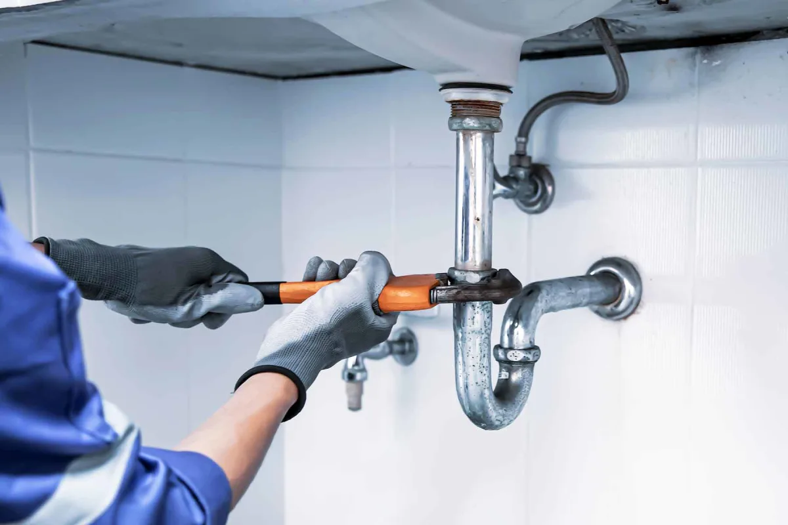
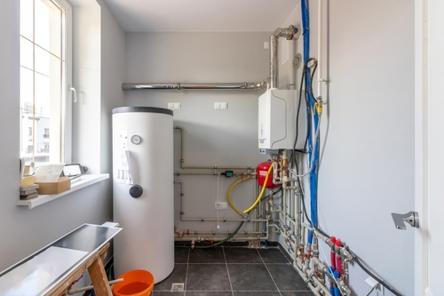
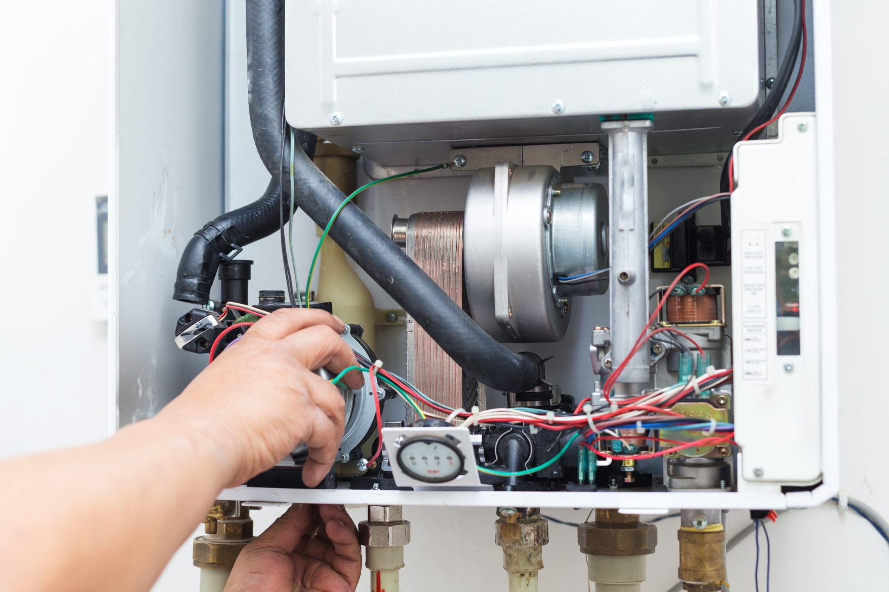
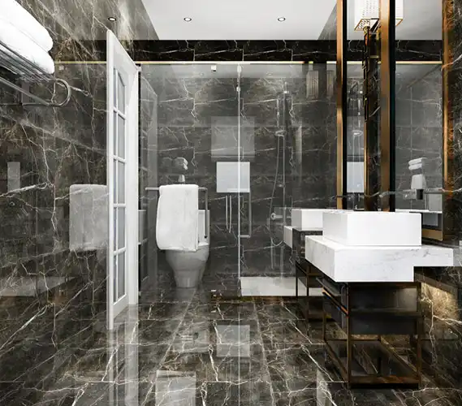
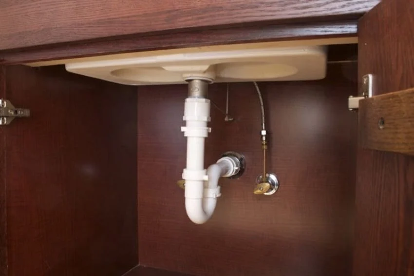
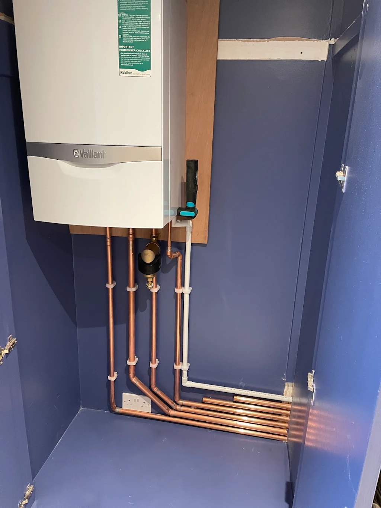

01 / Idraulica
Impianti idraulici
Interventi su tubazioni, collegamenti, rubinetteria, scarichi e sanitari.
Esplora il servizio →Scopri le principali aree di intervento per abitazioni e altri ambienti.

Interventi su tubazioni, collegamenti, rubinetteria, scarichi e sanitari.
Esplora il servizio →
Soluzioni legate alla distribuzione del calore e ai componenti dell'impianto termico.
Esplora il servizio →
Controlli e interventi tecnici in base al tipo di impianto e alle necessità riscontrate.
Richiedi informazioni →Contattaci direttamente per informazioni e disponibilità.
Immagini illustrative di ambienti e impianti idraulici e termici.


